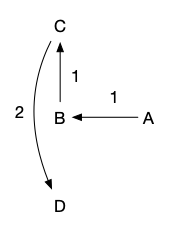
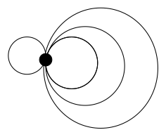

Algorithmes gloutons : corrigé
exercice 1 : le problème du voyageur de commerce
nombre de solutions
$n!$
Algorithmes gloutons
Il y a plusieurs possibilités, on en montre 2. Ils dépendent tous deux fortement de la position de départ, mais, comme ils sont rapide à exécuter, on peut faire plusieurs essais. De même lorsqu’on a le choix on utilisera toujours des optimisations locales plutôt que globale. L’algorithme 2, on cherche à ajouter le moins de chose dans le cycle que l’on a déjà créé plutôt que de choisir le point minimum à ajouter qui ferait passer notre algorithme à une complexité trop importante ($\mathcal{O}(n^3)$ plutôt que $\mathcal{O}(n^2)$).
Algorithme 1 : ajout itératif de la ville la plus proche
- étape $0$ on commence par choisir une ville $v_1$
- à l’étape $i>0$ on visite la ville la plus proche de $v_{i-1}$ que l’on a pas encore visité et on la nomme $v_i$
- au bout de $n$ étapes on a visité les $n$ villes.
L’algorithme n’est pas optimal en commençant par A : 
Il n’est jamais optimal pour : 
Algorithme 2 : ajout d’une ville dans un cycle
- à l’étape $0$ on prend 3 villes au hasard et on les relie ensemble en triangle.
- à l’étape $i >0$ on possède un cycle entre 4 - i villes. On ajoute alors une ville (quelconque) en la plaçant entre 2 villes adjacentes du cycle de départ. On choisit les villes adjacentes pour que l’ajout en distance soit minimal
- au bout de $n-3$ étapes on a relié toutes les villes
La non optimalité du second algorithme pour le cas métrique dans le plan est montrée ici. L’idée est de rajouter un sommet pour lequel il faut remettre en cause plus d’une chose que juste une arête.
- Un cycle optimal sans la ville F.
- En ajoutant la ville F, avec l’algorithme glouton
- la solution optimale
{kind=link}
{kind=link}
{kind=link}
optimisation
C’est le principe général d’optimisation a posteriori d’une solution appelée 2-opt
A partir d’un cycle solution, on supprime deux arêtes $xy$ et $zt$ de celui-ci et on ajoute les arêtes $xz$ et $yt$ qui permettent de conserver le fait que c’est un cycle. On regarde ensuite si la solution est meilleure. On peut faire cette suppression en considérant toutes les paires, ou uniquement quelques unes prisent au hasard si le nombre de villes est très important.
exercice 2 : coloration de graphes
exemples
La 2 coloriabilité des cycles paires et la 3 coloriabilité des cycles impaires est claire.
Pour un graphe bi-parti :
- s’il est biparti, on colorie chaque partie avec une couleur,
- s’il est 2-coloriable, chaque couleur est une partie.
On peut montrer qu’un graphe est bi-parti si et seulement si il ne contient pas de cycle de longueur impaire, mais cela dépasse de peu le cadre de cette séance.
glouton
On va prendre les sommets un a un et ajouter une couleur différente à celle de tous ses voisins déjà vus.
Ce qui donne :
- les couleurs sont des nombres
- on ordonne les sommets selon $x_1, \dots, x_n$
- on donne à $x_i$ la plus petite couleur non encore utilisée pour ses voisins
On prend la plus petite couleur non utilisée pour minimiser le nombre de couleurs.
Pour chaque sommet, regarde tous ses voisins, la complexité totale de l’algorithme est donc en $\mathcal{O}(\sum_x\delta(x)) = \mathcal{O}(\vert E\vert)$, c’est linéaire en la taille du graphe !
Avec l’exemple on a comme couleurs :
| A | B | C | D | E | F | G |
|---|---|---|---|---|---|---|
| 1 | 2 | 1 | 2 | 3 | 1 | 4 |
ordre choisi
C’est l’algorithme de Welsh Powell. On range les sommets par degré décroissant.
Avec l’exemple on a comme couleurs :
| G | E | A | D | B | C | F |
|---|---|---|---|---|---|---|
| 1 | 2 | 3 | 1 | 2 | 3 | 2 |
Mettre les plus gros d’abord nous permet de mettre une petite couleur à ceux qui ont des gros degrés puisque sa couleur sera au pire : $\min(\delta(x_i), i-1) +1$ :
- les gros degré auront une couleurs relevant de l’ordre dans lequel on les a pris,
- les petites degré conserveront au pire leur degré comme couleur.
Prouvons avec glouton
La formule ci-dessus nous donne directement le résultat. La borne est atteinte pour les graphes complets et les cycles impaires.
Notez que si le graphe n’est pas complet et n’est pas un cycle impaire on peut prouver que $\chi(G) \leq max_x(\delta(x))$ (Brooks (1941)). On peut le prouver en utilisant notre algorithme glouton, mais nous ne le détaillerons pas ici.
exemple
Chaque film est un sommet et on met une arête entre 2 films si leurs intervalles se chevauchent.
Dans l’exemple, les arêtes sont : ha, hb, ab, bc, ac, bd, dc, ce, ef, eg, fg. Et on a une coloration en 3 couleurs.
exercice 3 : cartes de géographie
coloration
Chaque pays est un sommet et une arêtes est placé entre chaque pays voisins.
Le graphe assoié à la carte est : 
Et ses couleurs :
| H | A | F | B | C | D | E | G |
|---|---|---|---|---|---|---|---|
| 1 | 2 | 3 | 3 | 2 | 3 | 2 | 4 |
Il y a 4 couleurs uniquement alors quele degré de H est 7.
planarité
Comme une carte est planaire on peut associer chaque sommet à un point de la carte et comme les pays forment des courbes fermées, on peut les traverser sans se croiser s’ils partagent un bout de frontière.
formule d’Euler
On prouve la formule d’Euler par récurrence sur $n$.
- $n = 0$.
- $m = 0$ on a qu’une seule face extérieure
- $m >0$ : le graphe est une successions de “disques” : . Il y a donc $m$ faces intérieures plus la face extérieure : $F = m + 1 = m - 1 + 2$
- $n >1$. Il existe une arête $xy$. On peut la contracter en 1 seul sommet (voir exemple ci-après). Cela ne change pas sa planarité ni son nombre de face. Ce nouveau graphe à une nombre de face $F’ = F$, un nombre de sommets $n’ = n - 1$ et un nombre d’arêtes $m’ = m-1$. Comme l’hypothèse de récurrence fonctionne pour le graphe contracté, on a $F’ = m’-n’ +2$ donc $F = (m-1) -(n-1) + 2 = m-n+2$.
Exemple de contractation : 
Comme chaque arête départage toujours 2 faces exactement Si on somme le nombre d’arête de chaque face, on obtient $2m$. Comme chaque face a au moins 3 arêtes, on en déduit : $2m \geq 3F$, si on remplace $F$ part $m-n+2$ on obtient : $m\leq 3n - 6$. Un graphe planaire a très peu d’arêtes.
La somme des degrés de chaque sommet vaut $2m$ et est plus grand que $n\cdot \min_x\delta(x)$. On a alors les 2 inégalités : $n\cdot \min_x\delta(x) \leq 2m \leq 2(3n-6) = 6n - 12$ et donc $\min_x(\delta(x)) < 6$.
Enfin, il est clair que si l’on supprime un sommet à un graphe planaire, il reste planaire. On peut donc choisir comme ordre $x_1, \dots x_n$ de choix de l’algorithme de coloration un ordre tel que $\delta(x_i) < 6$ pour le graphe planaire $G$ restreint à $\{x_1,\dots, x_i\}$ sa couleur sera toujours plus petite que son degré plus 1, c’st à dire 6.
On peut démontrer qu’il ne faut pas plus que 4 couleurs pour colorier une carte de géogrpahie. C’est la première démonstration faite par ordinateur (il y a trop de cas particulier à regarder pour un humain). La preuve qu’il faut moins que 5 couleurs est atteignable, mais (la encore) c’est un peut trop pour cette séance.
exercice 4 : le problème du sac à dos
on essaie
Exemple (traduit) tiré de https://home.cse.ust.hk/~dekai/271/notes/L14/L14.pdf :
- produit A, 2kg, 100kcal
- produit B, 2kg, 10kcal
- produit C, 3kg, 120kcal
De 1 à 7kg :
- 1kg : rien
- 2kg : A
- 3kg : C
- 4kg : C
- 5kg : A+C
- 6kg : A+C
- 7kg et plus A+B+C
Vous voyez qu’il y a des sauts et que ce n’est pas toujours le nombre maximum d’objet qui fonctionne.
sac à dos fractionnel
- sac de 4kg : 2 kg de A, 2kg de C
- sac de 5 kg : 3kg de C , 2kg de A
algorithme glouton
- entrée : liste de produits, chaque produit étant une liste [prix, kg, nom].
- sortie : liste de produits [indice, ratio] où indice est l’indice du produit dans la liste d’entrée et 0 < ratio <= 1 le ratio de produit prit.
code
def sac_a_dos_fractionel(produits, masse_totale):
prix_volumique_produits = []
for i, produit in enumerate(produits):
prix, volume, nom = produit
prix_volumique_produits.append((prix / volume, i))
prix_volumique_produits.sort()
prix_volumique_produits.reverse()
sac_a_dos = []
for produit in prix_volumique_produits:
prix_volumique, indice = produit
ratio = min(1, masse_totale / produits[indice][1])
masse_totale -= ratio * produits[indice][1]
sac_a_dos.append((indice, ratio))
return sac_a_dos
En exécutant le programme avec ces paramètres : [[100, 2, "A"], [10, 2, "B"], [120, 3, "C"]] on obtient : [(0, 1), (2, 0.6666666666666666), (1, 0.0)] c’est à dire :
- 1 du produit “A” (d’indice 0)
- 2/3 du produit “C” (d’indice 2)
- 0 du produit “B” (d’indice 1)
Nota Bene : On a utilisé quelques astuces de programmation python :
enumerate: appliqué à une liste retourne un énumérateur qui rend un couple (indice, element) pour chaque élément de la liste. http://book.pythontips.com/en/latest/enumerate.html#enumerate- Astuce du tri : lorsque l’on trie une liste de liste, python utilise l’ordre lexicographique. Cela permet ici de trier sur les prix volumique tout en conservant l’indice du tableau d’origine (le deuxième élément de la liste n’intervient dans le tri que si les 2 premiers éléments sont identique, ce qui ne change pas le tri par prix volumique)
- attention, les méthodes de liste
sortetreversene rendent rien. Elles modifient la liste. De làl.sort().reverse()ne fonctionne pas puisque cette commande signifie que l’on applique la méthdoereverseà l’objet donné en retour del.sort(). Or commel.sort()ne rend rien elle retourne l’objetNone(l’objet rien du tout en python) qui ne possède pas de méthodereverse. C’est ce que dit le message d’erreur quand on essaie de le faire :AttributeError: 'NoneType' object has no attribute 'reverse'(le type de l’objetNone(comme le tpe des entier estintou le type des réels estfloat) estNoneType(il a un type à lui)).
Preuve
Même place dans le sac-à-dos et pour notre algorithme et pour la solution optimale. De là, par construction de l’algorithme glouton (on prend à chaque choix soit tout le produit soit juste assez pour finir de remplir tout le sac) le ratio $r’_i$ de la solution optimale pour le produit d’indice $i$ est forcément plus petit strictement que $r_i$.
Donc : soit $r’_j = 0$ pour tout $j > i$ et notre solution est meilleure que la solution optimale, ce qui est impossible par hypothèse soit il existe $r’_j >0$ pour un $j>i$.
On pose alors $\epsilon = \min((r_i -r’_i) \cdot p_i, r’_j \cdot p_j)$ avec $p_k$ la quantité du produit $k$. On a que $\epsilon >0$ et la solution \((r_1, \dots, r_{i-1}, r'_i + \epsilon / p_i, r'_{i+1}, \dots r'_{j-1}, r'_j - \epsilon / p_j, r'_{j+1}, \dots, r'_n)\) est admissible, est meilleure que la solution optimale car le prix volumique du produit $j$ est inférieur à celui du produit $i$ et est telle que le ratio du produit $i$ est strictement plus grand que celui de la solution optimale. Ceci est impossible par hypothèse.
Notre hypothèse arrivant à une contradiction, elle était fausse : la solution de l’algorithme glouton est optimale.
sac à dos non fractionnel
si on ne peut pas couper ?
Notre algorithme glouton ne fonctionne pas si on ne peut pas prendre de factions. En effet il rendrait : “A” et “B” (puisque une fois mis “A” on ne peut pas mettre “C”) de calories totales 110kcal, alors que la réponse optimale serait de prendre “C” qui rapporte 120kcal.
algorithme
On suppose que l’on a une matrice $S[i][j]$ correspondant à un couple $(w, elements)$, où $w$ est la valeur de la solution optimale pour les $i$ premiers objets et un poids de $j$ kilos et $elements$ la listes des objets pris dans ce sac optimal.
L’algorithme est alors :
- pour $i$ allant de $1$ à $n$
- pour $j$ allant de $0$ à $W$ kilos
- si $j \geq w_i$ alors la valeur de $S[i][j]$ est le maximum de :
- la valeur de $S[i-1][j]$ (dans ce cas là on ne prenant pas l’objet $i$ dans la solution)
- la valeur de $S[i-1][j - w_i]$ plus $p_i$ (dans ce cas on prend l’objet $i$ dans la solution)
- sinon la soluton $S[i][j]$ est égale à la solution $S[i-1][j]$
- si $j \geq w_i$ alors la valeur de $S[i][j]$ est le maximum de :
- pour $j$ allant de $0$ à $W$ kilos
Il est clair que l’algorithme ci-dessus est juste une écriture de l’équation de récurrence, il est donc exact.
Il n’est pas glouton car on ne peut utiliser la technique de preuve par récurrence pour le démontrer. C’est en fait une autre technique d’algortime qui est utilise ici : la programmation dynamique. Cette technique consiste à trouver une relation de récurrence qui lie les solutions partielles entres elles.
complexité
La complexité en nombre d’opération de l’algorithme est en $\mathcal{O}(n * W)$
hein ?
Ca semble être une complexité polynomiale, mais c’est dans le stockage des variables qu’on prend une place exponentielle par rapport à la taille en entrée du problème !
En algorithmie la complexité est calculée en nombre d’opérations par rapport à la taille de l’entrée.
Ici, le poids $W$ est codé avec $\ln_2(W)$ bits en machine, donc la place mémoire prise pour stocker nos entrées est de :
- $\ln_2(W)$ pour encoder le poids du sac à dos
- $n * \ln_2(P)$ où $P$ est la valeur nutritionnelle max pour stocker les poids des $n$ produits,
- $n * \ln_2(W)$ pour stocker les poids des $n$ produits (on suppose que chaque produit pèse moins que le poids du sac dos),
On a donc besoin en tout de $\mathcal{O}(n * \ln_2(A))$ cases mémoires pour stocker toute notre entrée (avec $A$ le plus grand nombre)
Notre tableau à $n * W$ cases, donc le seul fait de le parcourir prend un nombre exponentiel d’opérations par rapport à notre taille d’entrée.
Ouf, nous voilà rassuré. Ce n’est pas la peine de brûler tous les livres d’algortihmie. Les problèmes les plus dur du monde sont effectivement dur à résoudre (un nombre exponentiel d’opérations en temps et/ou en mémoire).
Nota Bene : commencer à regarder les nombres comme prenant de la place ($\ln_2(x)$ case pour un nombre valant $x$) peut vous doner le tourni. En effet, que devient la complexité d’un tri par exemple ? Est-ce toujours $\mathcal{O}(n\ln(n))$ opérations ? Cela ne dépend pas de la valeur des nombres à trier ? Si bien sur ça dépend des nombres à trier. Mais si P est la valeur max des nombres à trier. On a besoin de $\mathcal{O}(n\ln_2(P))$ places mémoire pour les stocker et comme la comparaisons de deux nombres prend $\mathcal{O}(\ln_2(P))$ opérations, la complexité toale de l’algorithme est alors de $\mathcal{O}(n\ln(n)\ln_2(P))$ opérations qui est toujours en $\mathcal{O}(n\ln(n))$ opérations par rapport à la taille en entrée.